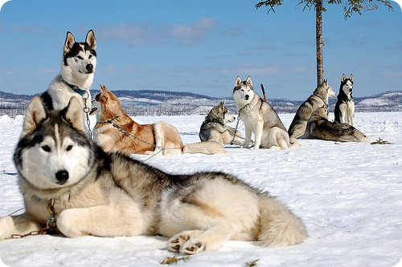
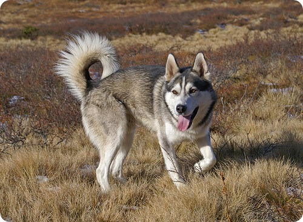

Спостерігаючи за цією собакою, важко не помітити, що в її зовнішності збереглося чимало вовчих рис. Дійсно, хаскі (або, як його часто називають в собаководческой літературі, сибірський хаскі) відноситься до категорії класичних порід, які нагадують нам про те, як багатовікова дружба людини і небезпечного хижака зробила з останнього вірного захисника і помічника.
Хорошим господарем для лайки хаскі може стати тільки по-справжньому активний, темпераментний людина, яка поважає спорт, свіже повітря і тривалі променади. Тримати це життєрадісне творіння природи в чотирьох стінах від прогулянки до прогулянки — попросту блюзнірство. Однак, якщо ви готові прийняти хаскі в свою сім’ю, ви отримаєте чудового приятеля з поступливим характером, абсолютно неагресивного і самовіддано виконує вправи на слухняність. При цьому важливо поважати і приймати деяку самодостатність хаскі (що часом може виявлятися і в тязі до бродяжництва), успадковану ним від вовка.
Сьогодні щасливих володарів хаскі можна зустріти практично в усіх куточках планети, в будь-яких кліматичних умовах. Але першими господарями цього собаки були чукчі. Вони використовували тварин для перевезення невеликих вантажів на далекі відстані. Хаскі, незважаючи на відносно невеликий розмір, виявилися дивно витривалими істотами. І сьогодні ці собаки з задоволенням вплутуються в активні ігри і беруть участь у спортивних змаганнях. Хаскі були створені самою природою, а дружелюбність, поступливість і слухняність в них виховали люди.
Енергія, що б’є ключем з цих собак, знайде прекрасне застосування в іграх з дітьми — хаскі відмінно з ними ладнають. У чукотських племен ці собаки нерідко виконували функцію няньки, їх використовували як «грілку» для найменших і залишали з дітьми в якості охоронців.
На початку 20 століття хаскі потрапили на Аляску, де допомагали шукачам пригод освоювати золоті копальні. Згодом в Америці був створений перший розплідник, в якому займалися розведенням хаскі для антарктичних експедицій. В даний час хаскі класифікують як спортивну їздову породу, крім того, вона використовується як собака — компаньйон і шоу- виставкова собака.
Суворі умови Крайньої Півночі прекрасно пристосували хаскі до життя і праці. Вони ж обдарували її благородної природною красою істинного мешканця дикої природи. Тепла шубка з густої «двошарової», не надто довгої шерсті відмінно захищає хаскі від морозу. Пропорційно складений корпус забезпечує прекрасну «аеродинаміку» їздовий собаки, легкість і витонченість рухів.
Що стосується забарвлення, то зустрічаються різні варіанти хаскі : сріблястий, чорний, білий, бурий. Плями і смуги, розташовані по всьому тулубу та голові, часом складаються в оригінальні вигадливі візерунки. Із приємних бонусів — чудовий пухнастий хвіст і життєлюбний неконфліктний характер. Цікаво, що хаскі практично не гавкає, вважаючи за краще використовувати мову свого дикого предка — виття і повизгивание.
Вибір цуценя хаскі
Заводячи собі нового пухнастого друга майте на увазі, що ціна на цуценят хаскі не маленька, хоча, звичайно, вона залежить від рівня і якості цуценя. Великі суми будуть йти і на утримання собаки, якісний корм і засоби по догляду за шерстю.
Купувати цуценя Хаскі краще по досягненні ним 4 — 6 — тижневого віку. До цього часу щенята стають більш індивідуальні, проявляється їх характер.
У хаскі досить складно вибрати кращого цуценя в посліді, так як ці собаки сильно змінюються в міру дорослішання. Фізичне формування собак породи хаскі повністю завершується тільки після трьох років. Однак, досвідчений заводчик завжди допоможе підібрати хорошого щеняти — просто друга чи учасника виставок.
Особливості утримання, догляд, здоров’я
Хаскі — собака дуже охайна, здатна самостійно за собою доглядати. У неї не течуть слюні і практично немає запаху. Линяють хаскі 1-2 рази на рік. Все, що потрібно від власника — регулярно вичісувати шерсть, а після прогулянок мити лапи. Купати хаскі повністю немає необхідності. Стрижка кігтів також не потрібно.
Харчування хаскі має бути збалансованим, містити всі необхідні для розвитку вітаміни і мікроелементи. Краще годувати вихованця спеціальним собачим кормом, який відповідає всім цим вимогам.
Хаскі необхідні тривалі прогулянки з фізичними навантаженнями. Вигулювати собаку краще на довгому повідку або обгородженій території, так як хаскі дуже волелюбні і не упустять можливість відправитися на прогулянку на самоті.
Щоб ваша меблі, тапки і книги були цілі, як цуценяті, так і дорослому собаці потрібні іграшки, які можна гризти.
Особливості в’язки хаскі
При виборі партнера для в’язки звертайте увагу на особин, відповідних стандартам породи. Крім того, собака повинна мати нормальний характер і хороші робочі показники. Звертайте увагу на будову тіла, руху.
Щоб не допустити виродження породи, обидві собаки повинні бути здорові. Хаскі найбільш схильні до таких захворювань як глаукома, катаракта і двосторонній крипторхізм. При наявності спадкової схильності до захворювань від в’язки краще відмовитися.
Строк для в’язки встановлюється у кожної суки індивідуально. Одні готові до спаровування на 12-14 день з початку тічки, інші тільки на 20 -й. Собаки хаскі можуть самостійно впоратися з процесом в’язки, і, на відміну від деяких інших порід, допомога людей їм не потрібно. Замок може триває від декількох хвилин до півгодини. Другу в’язку слід проводити не раніше, ніж через 48 годин — саме такий час живуть сперматозоїди. Друга, контрольна в’язка проводиться в залежності від бажання суки.
дресирування хаскі
Багато хто вважає, що хаскі погано піддаються дресируванню. Це не зовсім так. Хаскі неймовірно розумні собаки, але такі якості характеру, як самодостатність і незалежність, звичайно ускладнюють завдання. Тому дресирування вихованця краще довірити професіоналам.
Елементарним командам сибірську хаскі необхідно починати навчати своїми силами з раннього віку. У віці 6-7 місяців можна віддати тварину на курс дресури.
Пам’ятайте, що хаскі робоча собака. Віддаючи вихованця на захисний курс дресирування, ви не досягнете бажаного результату на 100 %, а тільки зламаєте тварині психіку. Собаки породи хаскі привітні і не агресивні по відношенню до людей. Хаскі може облизати навіть незнайомця — на знак вітання.
Стандарт породи описує хаскі як «доброзичливих і добрих, але разом з цим уважних і чуйних. Сибірська Хаскі лідер по натурі. Вона не проявляє власницьких рис і підозрілості до чужих, як у охоронних собак, і не агресивна до інших собакам. Певний запас стриманості, і почуття власної гідності можуть проявлятися у дорослого собаки. Її розум, поступливість і палкий норов роблять її приємним компаньйоном і старанною роботягою».
Розплідники і клуби
Клуби та розплідники хаскі займаються племінним розведенням собак, надають послуги з дресирування, консультують з питань утримання та виховання тварин. Цуценята хаскі з розплідників Росії високо цінуються у всьому світі.
Одним з найвідоміших російських розплідників є «Хаскі Хевн», розташований в Москві. Продаж щенят хаскі здійснюється за договором, всі цуценята мають ветеринарні паспорти та родоводи.